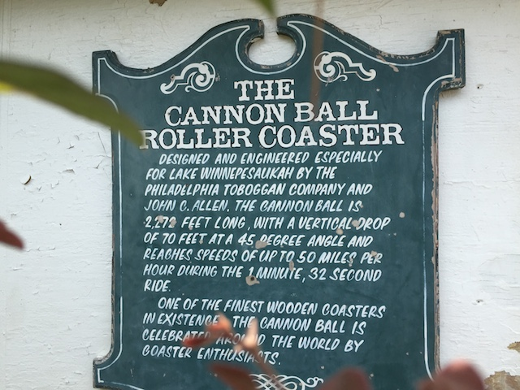
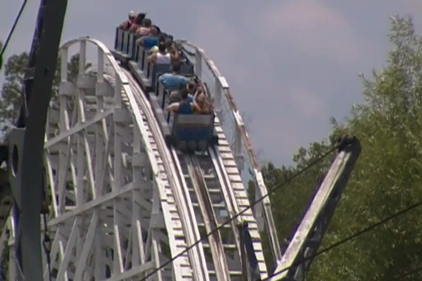
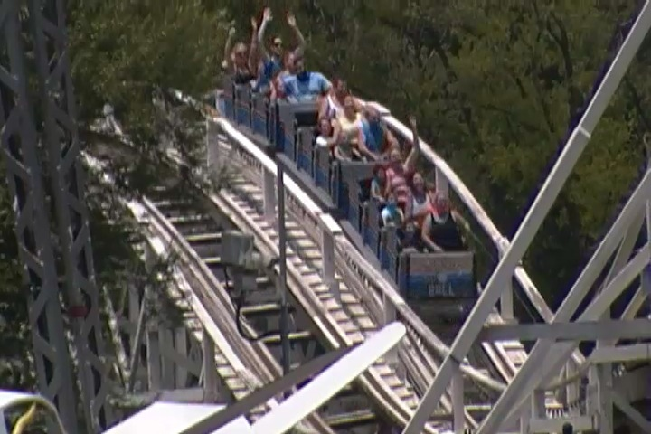
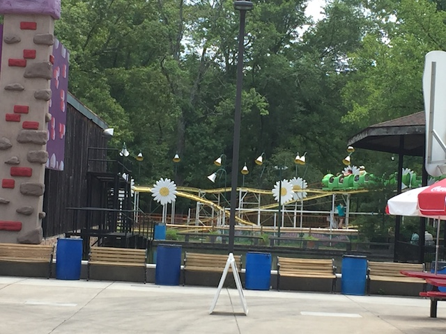
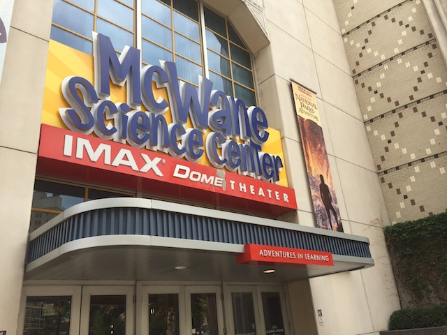

| |
Deep South Trip 2016
Carowinds Dollywood Lake Winnie Six Flags Over Georgia
Aww. It's time for us to leave Pigeon Forge. I'll be back soon for Dollywood, as well as to check out all the fun quirky stuff they have here.
Yeah. We had to stop and do one of the many Alpine Coasters here. We just had to!! It's Pigeon Forge!!! =)
Can't wait to experience an Alpine Coaster in the middle of the Smoky Mountains.
While I do absolutely love the setting, the alpine coaster itself sadly wasn't as good as I expected. It almost felt too controlled, and it was braking too much. I still liked it, but not as much as the one at Fort Fun or the one in Park City.
 Yeah. We're in Knoxville, and I just can't look at the Sunsphere without thinking about that Simpsons episode where Bart drives to Knoxville to try and go to the Worlds Fair. =)
Yeah. We're in Knoxville, and I just can't look at the Sunsphere without thinking about that Simpsons episode where Bart drives to Knoxville to try and go to the Worlds Fair. =)
"Oh god. A giant church. That big a display of religion makes me feel uncomfortable. Last time I saw giant crosses like that, I was in...OH F*CK!!! I'M GETTING FLASHBACKS OF BEING IN THE TEXAS PANHANDLE!!! MAKE THEM STOP!!! MAKE THEM STOP!!! *sobs*"
 OK. Back to good stuff. We made it to Lake Winnie!! YAY!!! =)
OK. Back to good stuff. We made it to Lake Winnie!! YAY!!! =)
Hey. Having free Wi-Fi is always something that makes me happy.

And yeah. There's only one reason we decided to stop at Lake Winnie.

Do not underestimate Cannon Ball. This is NOT a cruiser snoozer. It's a really fun out and back woodie.

Wee! Airtime!
Hey Hersheypark. Does this ride look familiar?
Well, we're here. Might as well ride their Paratrooper.
 OK. Time for another credit. And yeah. They have a Wild Mouse here.
OK. Time for another credit. And yeah. They have a Wild Mouse here.
 Sorry, but this mouse blows. Not only is it not as intense as the Crazy European Mice plus Lagoons, but it's also just uncomfortable. I really didn't like it.
Sorry, but this mouse blows. Not only is it not as intense as the Crazy European Mice plus Lagoons, but it's also just uncomfortable. I really didn't like it.
The only upside I can think of is that it has a good setting by the lake.
"Feed me your trash!!"
I keep forgetting just how fun these Shock Drops are. Love how they don't even stop at the top and just drop.
 Lake Winnie is one of the few parks that still has a Fly-O-Plane. Seriously, Lake Winnie is the only park I can think of. And this flat ride is a ton of fun. You control the flipping and can just make it go crazy. A shame that there's not more rides like this in other parks.
Lake Winnie is one of the few parks that still has a Fly-O-Plane. Seriously, Lake Winnie is the only park I can think of. And this flat ride is a ton of fun. You control the flipping and can just make it go crazy. A shame that there's not more rides like this in other parks.
 Yeah. This dark ride is stupid and cheesy, but it's still fun.
Yeah. This dark ride is stupid and cheesy, but it's still fun.

Yeah. We have another credit to get.
"Today, Evan reached a big milestone. For this was Evans first ever Wacky Worm. Now he has experienced one of these beautiful and magnificent coasters". =)
When at Lake Winnie, it's probably a good thing to actually look at...Lake Winnie.
Yeah. We had to do the Boat Chute here since its one of those rides we knew about.
Yeah. There's really not much to this ride. It's literally just a tunnel for over 5 minutes. No theming. Just 5 minutes of darkness. This ride is for sex. No really. This is just a dark tunnel for horny people to start f*cking. No distractions. Total privacy. And its long enough for you to finish.
 Have no fear. All stains will be covered up by the water. ;)
Have no fear. All stains will be covered up by the water. ;)
Hey. If a park as big and powerful as the Walt Disney World Resort can't stop the alligators from eating your children, what chance does a park like Lake Winnie have?
Well Lake Winnie, I had a real fun time, but it's time for us to move on. We've got other plans for the second half of the day.
Fun fact. Lake Winnie is in Georgia, but it's right on the border. To the point where we just decided to have lunch in Tennessee.
Seriously. This Bojangles is about as close to Lake Winnie as the closet McDonalds to my house, which is about a mile away. Easily within walking distance. And yet, we crossed state lines to go here. Oh, and while I like Bojangles, this particular Bojangles was a reminder that there is a standard of quality that Fast Food resteraunts need to follow. Seriously, I don't expect much, but this particular Bojangles needs a visit from the Tennessee Health Inspector.
TAKE THE TUNNEL!!!!
Ooh. Love the drive right by the Tennessee River.
"Yay! New state credit! And oh boy. We get to go to Alabama."
Ah f*ck! The weather is turning on us.
And I just saw lightning and heard thunder. =(
Yeah. We came down to go to Alabama Adventure and ride Rampage. But...*sigh* They closed it because of the lightning. Well, at least when they close stuff for lightning, you can actually see the lightning unlike some other parks *cough*Six Flags Over Texas*cough*.
Hoping that the Koch Family (they own Holiday World) can really improve this place, so when I come back, it'll be for more than just Rampage.
OK. We just drove down to Alabama. We're not going to let Rampage being closed stop us from having fun. Let's see what we can do in Birmingham.

"*gasp* There's a Science Center in Alabama!? Quick!! Go and see it before they turn it into another Creationism Museum!!!"
I feel like I'm back on the Power Tower at Legoland CA.
"GRR!!! MUST CRUSH EVAN!!! CRUSH!!!"
If this game sounds like bullsh*t, that's because it is.
"Don't make me go Steve Irwin on your ass!!!"
Hello random sea horse.
Hey. I don't mind learning about the wetlands of Alabama. And I feel like a lot of Alabamans should learn about this as well.
Aww. The slide is closed. =(
Love this statue right outside the McWane Science Center.
All right. After looking at a bunch of resteraunts on Yelp, we decided to settle on Moes BBQ.
Those Redneck Nachos are really good. =)
Yeah. You can tell that we were in Alabama as we have left our mark on our way out. ;)
And now we're back in Georgia, and we're staying in Atlanta, and trying out Airbnb. We've stayed at hotels, we've couchsurfed, we've camped, and now we've done Airbnb. I know people compare Airbnb to Couchsurfing, but honestly, outside of staying in peoples homes, that's where the similarities end. Couchsurfing isn't just about staying about people's homes, it's about connecting with locals, exploring new places, and really getting involved, which is why I loved it so much. I know when I did the Texas/Rocky Mtn Road Trip and couchsurfed for all six locations, I got to meet, and hang out with all six people, and all of them were great. We ate Iraqi cuisine, had some hot tub fun, and then drank tea and smoked with our Muslim host in Oklahoma City, we really lucked out and got front row seats to see the Heygoods from our host in Branson, and I still talk with our host from Dallas frequently. Airbnb was far more like a hotel. The people were nice, but it felt less like we're hanging out and meeting one another and more like a business transaction. Now that's not to say I haven't heard stories similar to my Couchsurfing experiences from other people using Airbnb. But I greatly prefer Couchsurfing. Now Airbnb is great in that it works and if in certain places, it's a good deal and a much better deal than a hotel. But if you want to meet others and have a real crazy travel experience, Couchsurfing is the way to go (I gotta do another Couchsurfing trip soon).
Six Flags Over Georgia
Home
|